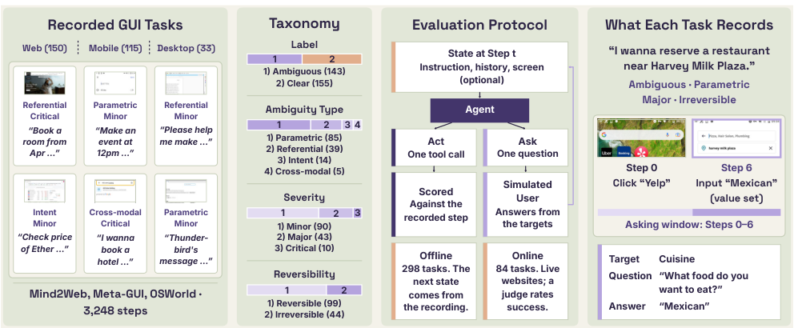
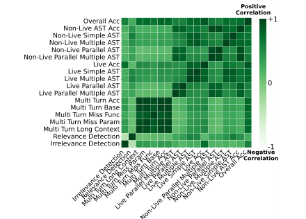
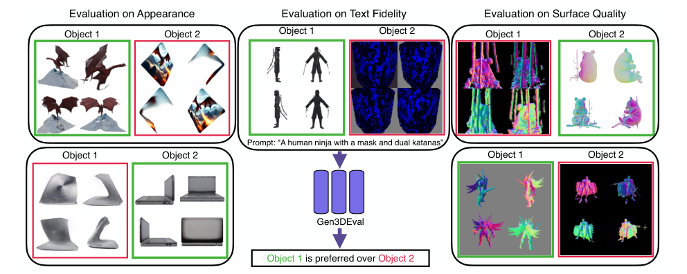
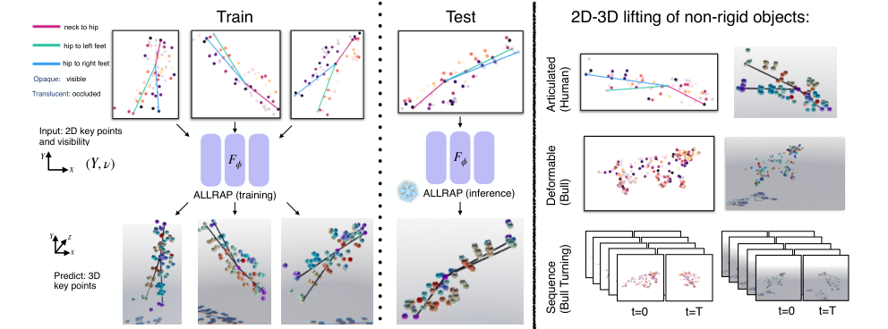
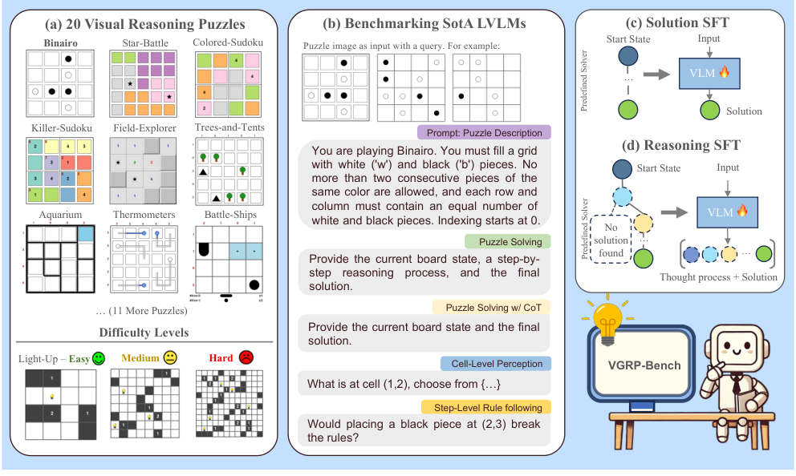

AmbiGUI: Act or Ask? Benchmarking Clarification in GUI Agents Under Ambiguous Instructions
Under review, 2026
Evaluating when GUI agents should act or ask, and whether clarification improves task completion.
AI Researcher; Geometric & Multimodal Learning, Reasoning & Agents
University College London · Meta (FAIR + MSL)
PhD researcher at University College London (in collaboration with Meta) with research experience spanning geometric learning, vision-language models, model merging, and clarification-aware agents. My work connects learning structured representations with grounded understanding, generation, and reliable decision-making.
My current work and directions I’m interested in exploring include:

Under review, 2026
Evaluating when GUI agents should act or ask, and whether clarification improves task completion.

Findings of EMNLP, 2026
paper / arXiv · *Equal contribution
Category-aware expert selection and weighted model merging improve LLM capabilities without retraining.

Computer Vision and Pattern Recognition (CVPR), 2025
Fine-tuned vision-language models assess the text fidelity, appearance and surface quality of generated 3D objects.

4DVision Workshop at CVPR, 2025
Recovering non-rigid 3D structure from 2D observations using local low-rank constraints.

Preprint, 2025
project page / arXiv / dataset
Testing perception, rule-following and reasoning across 20 visual grid puzzles.
Upcoming: PhD thesis submission planned for December 2026.
I welcome requests to discuss a specific research collaboration. Please include a brief introduction, the exact topic or research question, and why you would like to collaborate with me.
Availability:
Fridays, 15:00–19:00 London time (GMT/BST).
Meeting length: 25 minutes.
I’ll review your request and reply to arrange a suitable slot.
Request a collaboration meeting